カスケード攻略 - スキル・タリスマン・チーム | ヒーローウォーズ・アライアンス
- 著者: アレクサンドレ・ドミンゴス。 .
カスケードは、ヒーローウォーズ・アライアンスの中でも特に柔軟なダメージディーラーです。彼のキットは一つの攻撃ルートに固定されず、アーマー、魔法防御の両方に圧をかけられます。さらに攻撃が敵の防御を貫通した時には、追加ダメージで敵をさらに追い込めます。
このガイドでは、カスケードのタリスマン、スキル式、レジェンダリーレリック強化、スキン、アーティファクト、グリフ、カウンター、シナジー、最適チームを扱います。リソースを無駄にせず育成できるよう、必要な情報を省略せずにまとめています。


カスケード目次
- カスケードとは？
- カスケードの総合評価
- カスケードの長所と短所
- タリスマン最大ステータス比較
- タリスマンガイド
- レジェンダリーレリックスキル強化優先度
- カスケードのおすすめスキン
- アーティファクト強化優先度
- グリフ強化優先度
- カスケード対策
- カスケードのシナジー
- カスケードのおすすめチーム
- 結論
ヒーローウォーズ・アライアンスのカスケードとは？
カスケードは「ミステリーの道」に属するマークスマンで、ダメージディーラー兼コントロール役として戦います。価値の中心は、敵の防御に合わせて基本攻撃を変化させつつ、ハイドロキネシス、タイダルウェーブ、リフルエンスで敵の陣形を崩せる点です。
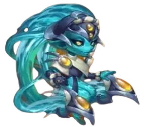
- メインクラス: マークスマン
- 役割: ダメージディーラー、コントロール
- 配置: 後衛
- メインステータス: 素早さ
- 派閥: ミステリーの道
- シナジー: ミステリーヒーローは、ソドンアーマーを通じてリフルエンスのダメージを強化します。
カスケードを特殊にしているのは、4番目のスキル「エレメンタルサージ」です。彼の魔法防御貫通はアーマー貫通と同じ値になり、基本攻撃のダメージタイプは対象のアーマーと魔法防御によって変化します。
つまり、カスケードは一つの防御ステータスだけでは止めにくいヒーローです。対象が物理ダメージ対策に寄っていれば魔法ダメージ側で攻められ、攻撃が貫通すればさらに追加ダメージの圧も重ねられます。
カスケードの長所と短所 - ヒーローウォーズ・アライアンス
長所
- 特に強い相手: オヤの引き寄せ。カスケードは敵を押し返せるため、味方がオヤの拘束から抜け出しやすくなります。
- 物理、魔法、純ダメージのルートで敵に圧をかけられます。
- 主要なダメージ式はすべて物理攻撃でスケールするため、潮汐のタリスマンが非常に効率的です。
- リフルエンスとソドンアーマーを通じて、ミステリーヒーローとのシナジーが強いです。
- レジェンダリーレリックにより、後衛スタン、距離で伸びるタイダルウェーブのダメージ、ダメージ免疫が追加されます。
短所
- コントロールと生存力を完全に引き出すには、レジェンダリーレリックへの投資が必要です。
- 戦闘中にボーナスを与えるのは装備中のタリスマンだけなので、タリスマン選択が重要です。
- 最高火力の構成は、物理攻撃スケーリングと貫通値に大きく依存します。
- 渦潮のタリスマンは生存力を高めますが、重要なダメージ式の数値をいくつか下げます。
カスケード - タリスマン最大ステータス比較
| ステータス | 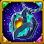 タリスマン_1: 潮汐 |
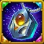 タリスマン_2: 渦潮 |
|---|---|---|
 知力 知力 |
3,708 | 3,708 |
 素早さ 素早さ |
17,610 | 15,610 |
 力 力 |
3,576 | 3,576 |
 HP HP |
812,498 | 922,498 |
 物理攻撃 物理攻撃 |
161,762 | 142,562 |
 魔法攻撃 魔法攻撃 |
26,230 | 26,230 |
 アーマー アーマー |
51,463.7 | 72,233.7 |
 魔法防御 魔法防御 |
13,360 | 13,360 |
 アーマー貫通 アーマー貫通 |
46,438 | 46,438 |
 クラッシング クラッシング |
5,747 | 5,747 |
カスケードのタリスマンガイド ヒーローウォーズ・アライアンス
カスケードには2つのタリスマンがありますが、戦闘中にボーナスを与えるのは装備しているタリスマンだけです。これはスキンとは異なります。強化済みスキンのボーナスは、別のスキンを表示していても有効なままだからです。カスケードの場合、ダメージとコントロールの式の多くが物理攻撃でスケールするため、この選択は重要です。
潮汐のタリスマン
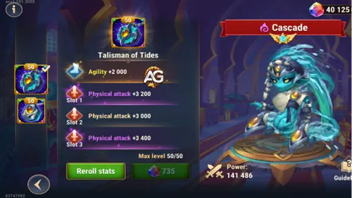
メインステータス枠: 素早さ +2,000。素早さはカスケードのメインステータスなので、素早さ由来の物理攻撃とアーマーを得られ、最終的な物理攻撃スケーリングも強化されます。
リロール枠: 各枠に物理攻撃 +4,400。合計リロールボーナスは 物理攻撃 +13,200.
| タリスマン | メインステータス | 合計リロールボーナス |
|---|---|---|
|
潮汐のタリスマン |
素早さ +2,000 |
物理攻撃 +13,200 |
| 枠1 | 枠2 | 枠3 | 合計リロールボーナス |
|---|---|---|---|
物理攻撃 +4,400 |
物理攻撃 +4,400 |
物理攻撃 +4,400 |
物理攻撃 +13,200 |
渦潮のタリスマン
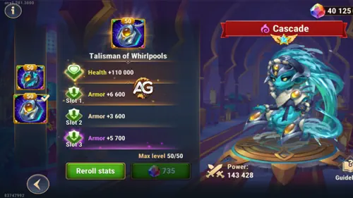
メインステータス枠: HP +110,000。カスケードがコントロールサイクルを始める前にバーストダメージを耐える必要がある時の、より安全な選択肢です。
リロール枠: 各枠にアーマー +6,600。合計リロールボーナスは アーマー +19,800.
| タリスマン | メインステータス | 合計リロールボーナス |
|---|---|---|
|
渦潮のタリスマン |
HP +110,000 |
アーマー +19,800 |
| 枠1 | 枠2 | 枠3 | 合計リロールボーナス |
|---|---|---|---|
アーマー +6,600 |
アーマー +6,600 |
アーマー +6,600 |
アーマー +19,800 |
アレクサンドレのヒント: ほとんどの戦闘では 潮汐のタリスマン を使います。カスケードの主要なダメージ式は物理攻撃でスケールし、ハイドロキネシス、タイダルウェーブ、リフルエンス、フローズンメイルストロムのすべてがより強くなります。物理バーストでカスケードが早く倒されすぎる場合は 渦潮のタリスマン を使い、追加のHPとアーマーでハイドロキネシスを発動し、アイスバーグシャードの恩恵を受けられるだけの時間を稼ぎます。
カスケードのレジェンダリーレリックスキル強化優先度 - ヒーローウォーズ・アライアンス
レリックは、後衛へのコントロール、強化されたタイダルウェーブのダメージ、物理攻撃低下、短時間のダメージ免疫を追加し、カスケードをより完成度の高いヒーローにします。
0 - 基本攻撃
タリスマン1の式: 潮汐のタリスマン
- 式1: 物理ダメージ: 161,762（物理攻撃100%）
タリスマン2の式: 渦潮のタリスマン
- 式1: 物理ダメージ: 142,562（物理攻撃100%）
スキルアニメーション情報
- クールダウン: 4.2秒
- アニメーション遅延: 0.45秒
- ダメージタイプ: エレメンタルサージで変換される前の物理ダメージ
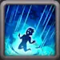
1番 - ハイドロキネシス（アルティメット）
ゲーム内説明: カスケードが激しい豪雨を放ち、4.0秒間、毎秒敵にダメージを与え、メインステータスに応じた状態異常を付与します。力ヒーローは物理ダメージを受け、アーマーと魔法防御が低下します。素早さヒーローは魔法ダメージを受け、暗闇状態になります。知力ヒーローは物理ダメージを受け、沈黙状態になります。
スキル解説: ハイドロキネシスはカスケードの主なコントロール開始手段です。時間経過ダメージを与えながら、敵のメインステータスに応じて罰を変えます。タンクは防御を失い、素早さヒーローは暗闇で攻撃を外しやすくなり、知力ヒーローは沈黙させられます。時間経過ダメージは 物理攻撃2% + 600 / 秒、防御低下は 物理攻撃8% + 1,200.
タリスマン1の式: 潮汐のタリスマン
- 式1: 毎秒の時間経過ダメージ: 3,835.24（物理攻撃2% + 600）
- 式2: アーマーと魔法防御の低下: 14,140.96（物理攻撃8% + 1,200）
タリスマン2の式: 渦潮のタリスマン
- 式1: 毎秒の時間経過ダメージ: 3,451.24（物理攻撃2% + 600）
- 式2: アーマーと魔法防御の低下: 12,604.96（物理攻撃8% + 1,200）
スキルアニメーション情報
- キーワード: デバフ、暗闇、コントロール
- アニメーション遅延: 1.2秒
- 持続時間: 4秒
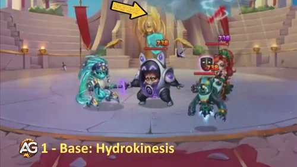
強化優先度: 高 - これは優先度が高いです。カスケードにダメージ、デバフ、暗闇、沈黙を一つのスキルで与え、チーム全体が戦闘テンポをコントロールしやすくなるからです。
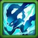
2番 - タイダルウェーブ
ゲーム内説明: カスケードが敵陣を突き抜け、魔法ダメージを与えて敵をノックバックします。ノックバックは近くの敵ほど効果が高くなります。突進の終点に到達した後、カスケードは最も遠い敵との元の距離と同じ射程になる新しい位置へ戻ります。
スキル解説: タイダルウェーブはカスケードの移動兼妨害スキルです。魔法ダメージは 物理攻撃20% + 1,200で計算され、敵を押し返し、カスケードがタイダルウェーブを発動した後にソドンアーマーが付与されるため、リフルエンスの準備にもなります。
タリスマン1の式: 潮汐のタリスマン
- 式1: 魔法ダメージ: 33,552.4（物理攻撃20% + 1,200）
タリスマン2の式: 渦潮のタリスマン
- 式1: 魔法ダメージ: 29,712.4（物理攻撃20% + 1,200）
スキルアニメーション情報
- 初回クールダウン: 11秒
- クールダウン: 20秒
- キーワード: ノックバック、コントロール
- アニメーション遅延: 0.01秒
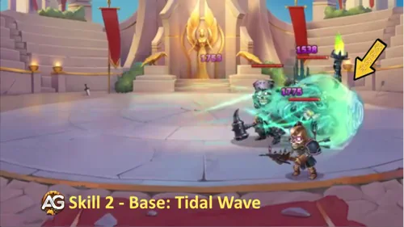
強化優先度: 高 - タイダルウェーブは優先度が高いです。敵の位置取りをコントロールし、リフルエンスを有効化するため、ダメージとチームのリズムの両方に影響します。
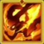
2番 - タイダルウェーブ強化 - レジェンダリーレリック レベル10
ゲーム内説明: ハイペリオンの力を得ます。敵がカスケードから遠いほど、タイダルウェーブが与えるダメージが増えます。
スキル解説: この強化により、タイダルウェーブは敵との距離でスケールします。最小ダメージは 物理攻撃20% + 1,200のままで、最大ダメージは 物理攻撃100% + 3,000まで上がります。敵の後衛ヒーローがカスケードから遠い時に非常に大きな強化になります。
タリスマン1の式: 潮汐のタリスマン
- 式1: 最小魔法ダメージ: 33,552.4（物理攻撃20% + 1,200）
- 式2: 最大魔法ダメージ: 164,762（物理攻撃100% + 3,000）
タリスマン2の式: 渦潮のタリスマン
- 式1: 最小魔法ダメージ: 29,712.4（物理攻撃20% + 1,200）
- 式2: 最大魔法ダメージ: 145,562（物理攻撃100% + 3,000）
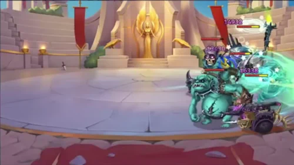
強化優先度: 非常に高い - これはカスケードの中でも最高クラスのレリック強化です。コントロール用の突進を、遠い敵に対する強力なダメージ手段へ変えます。
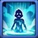
3番 - リフルエンス
ゲーム内説明: タイダルウェーブを発動した後、カスケードは戻り道で命中した敵にソドンアーマー状態を付与します。この効果は8.0秒続きます。効果を受けた敵がダメージを受けるたび、ソドンアーマーは同じタイプの追加ダメージを与えます。そのダメージが味方のミステリーヒーローによるものだった場合、対象の敵は増加ダメージを受けます。
スキル解説: リフルエンスは、カスケードのミステリーシナジーがはっきり見える部分です。ソドンアーマー状態の対象に対するすべてのヒットが追加ダメージを発生させる可能性があり、ミステリーヒーローはより強い版を発動します。通常式は 物理攻撃7% + 2,400で、ミステリーヒーローは 物理攻撃15% + 4,800.
タリスマン1の式: 潮汐のタリスマン
- 式1: 追加ダメージ: 13,723.34（物理攻撃7% + 2,400）
- 式2: ミステリーヒーローによる追加ダメージ: 29,064.3（物理攻撃15% + 4,800）
タリスマン2の式: 渦潮のタリスマン
- 式1: 追加ダメージ: 12,379.34（物理攻撃7% + 2,400）
- 式2: ミステリーヒーローによる追加ダメージ: 26,184.3（物理攻撃15% + 4,800）
スキルアニメーション情報
- 持続時間: 8秒
- 発動条件: タイダルウェーブ発動後
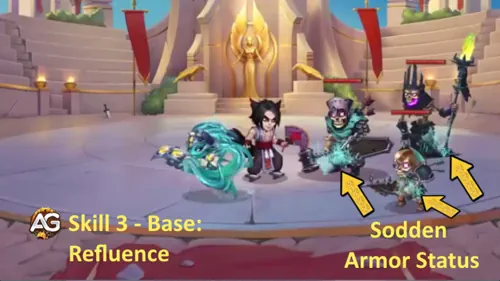
強化優先度: 高 - リフルエンスはミステリーチームで優先度が高いです。追撃の一つ一つに報酬を与え、長期戦でのカスケードのダメージを大きく伸ばします。
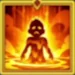
3番 - リフルエンス強化 - レジェンダリーレリック レベル20
ゲーム内説明: マイリの狡猾さを得ます。ソドンアーマー効果は、敵の物理攻撃も低下させるようになります。
スキル解説: このレジェンダリー強化は、攻撃を通じて防御力を加えます。ソドンアーマーを受けた敵は 物理攻撃40%も失うため、リフルエンスのダメージエンジンを維持しながら、カスケードのチームが物理アタッカーを耐えやすくなります。
タリスマン1の式: 潮汐のタリスマン
- 式1: 敵の物理攻撃低下: 40%
タリスマン2の式: 渦潮のタリスマン
- 式1: 敵の物理攻撃低下: 40%
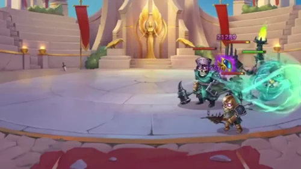
強化優先度: 中〜高 - 新しいダメージ式は追加しませんが、物理攻撃40%低下は物理チーム相手の戦況を大きく変えられます。
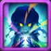
4番 - エレメンタルサージ
ゲーム内説明: カスケードの魔法防御貫通は、常にアーマー貫通値と同じになります。戦闘中にどちらかのステータスが変化すると、もう一方も同じように変化します。カスケードの基本攻撃のダメージタイプは、対象の防御ステータスによって変わります。対象のアーマーが魔法防御より高い場合、対象は魔法ダメージを受けます。それ以外の場合は物理ダメージを受けます。基本攻撃が対象のアーマーまたは魔法防御を貫通した場合、対象は追加攻撃で別タイプのダメージも受けます。その追加攻撃が対応する防御を貫通した場合、対象は純ダメージも受けます。
スキル解説: エレメンタルサージこそ、カスケードが防ぎにくい理由です。このスキルにより魔法防御貫通がアーマー貫通と同じになるため、表示されている 35,788 アーマー貫通 は魔法ダメージルートも支えます。連続攻撃のダメージは 100%.
タリスマン1の式: 潮汐のタリスマン
- 式1: アーマー貫通と魔法防御貫通: 35,788
- 式2: 連続攻撃ダメージ: 100%
タリスマン2の式: 渦潮のタリスマン
- 式1: アーマー貫通と魔法防御貫通: 35,788
- 式2: 連続攻撃ダメージ: 100%
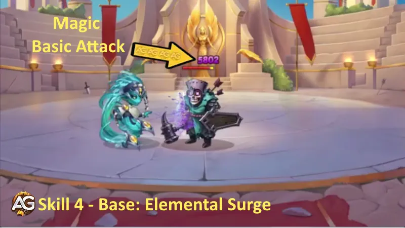
強化優先度: 非常に高い - このパッシブはカスケードの個性を定義します。ダメージの柔軟性を高め、貫通ボーナスが物理と魔法の両方の圧を支えるようにします。
5番 - フローズンメイルストロム - 新レジェンダリースキル レベル1
ゲーム内説明: ノヴァの精密さを得ます。12.0秒ごとに敵の後列へ投射物を放ち、ダメージを与えて1秒間スタンさせます。
スキル解説: フローズンメイルストロムは、カスケードに自動的な後衛圧を与えます。12秒ごとに発射され、 物理攻撃60%の魔法ダメージを与え、敵後列を妨害する1秒スタンを追加します。
タリスマン1の式: 潮汐のタリスマン
- 式1: 魔法ダメージ: 97,057.2（物理攻撃60%）
タリスマン2の式: 渦潮のタリスマン
- 式1: 魔法ダメージ: 85,537.2（物理攻撃60%）
スキルアニメーション情報
- 発動間隔: 12秒
- スタン時間: 1秒
- キーワード: スタン、コントロール
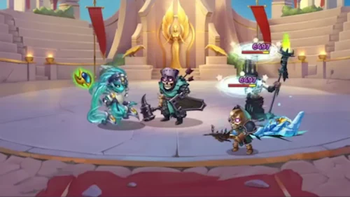
強化優先度: 高 - 早めに解放する価値があります。カスケードのエネルギーサイクルを待たずに、自動コントロールとダメージを追加できるからです。
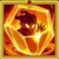
6番 - アイスバーグシャード - 新レジェンダリースキル レベル30
ゲーム内説明: シグルドの耐久力を得ます。第一スキルを発動すると、カスケードは5.0秒間すべてのダメージを無効化します。
スキル解説: アイスバーグシャードは、カスケードの大きな生存強化です。ハイドロキネシスを発動すると、彼はすべてのダメージを 5秒無効化し、第一スキルでコントロールチェーンを開始した後も戦い続けるチャンスを得ます。
タリスマン1の式: 潮汐のタリスマン
- 式1: ダメージ免疫: 5秒
タリスマン2の式: 渦潮のタリスマン
- 式1: ダメージ免疫: 5秒
スキルアニメーション情報
- 発動条件: ハイドロキネシス発動時
- 持続時間: 5秒
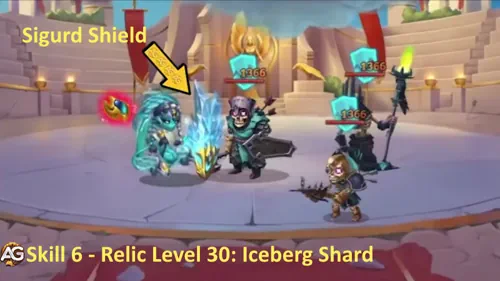
強化優先度: 中〜高 - 効果は強力ですが、レジェンダリーレリック レベル30で遅く解放されます。カスケードの主要なダメージとコントロール要素が機能してから優先しましょう。
カスケードのおすすめスキン ヒーローウォーズ・アライアンス
カスケードはまず物理攻撃と貫通を求めます。キット内の重要なダメージ式のほぼすべてが物理攻撃でスケールするからです。
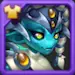
デフォルトスキン
ステータス: 素早さ +1,365。素早さはカスケードのメインステータスなので、物理攻撃 +4,095 とアーマー +1,365 を得ます。
強化優先度: 高 - 素早さはダメージとアーマーを同時に与えるため、カスケードの式と基本的な生存力の両方を支えます。
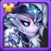
ウィンタースキン
ステータス: アーマー貫通 +10,650。
強化優先度: 非常に高い - エレメンタルサージによりカスケードの魔法防御貫通はアーマー貫通と同じになるため、このスキンは両方のダメージルートを強化します。
ミシックスキン+
ステータス: 物理攻撃 +14,190。強化版のスキン+は、入手時に物理攻撃ボーナスを2倍にします。
強化優先度: 非常に高い - カスケードのハイドロキネシス、タイダルウェーブ、リフルエンス、フローズンメイルストロムはすべて物理攻撃でスケールします。
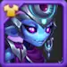
ステラースキン
ステータス: アーマー +10,650。
強化優先度: 中 - 物理圧に対して有用ですが、カスケードのダメージ式は強化しません。
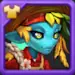
ハーベストスキン
ステータス: HP +106,645。
強化優先度: 中〜高 - 追加HPにより、ハイドロキネシスとアイスバーグシャードで守れるタイミングまでカスケードが生き残りやすくなります。
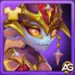
ドーンスキン
ステータス: アーマー貫通 +10,650。
強化優先度: 非常に高い - ウィンタースキンと同じく、ドーンは優秀です。アーマー貫通はエレメンタルサージを通じてカスケードの魔法防御貫通も支えるからです。
カスケードのアーティファクト強化優先度 ヒーローウォーズ・アライアンス
カスケードのアーティファクトは価値が高いです。貫通、物理攻撃スケーリング、そしてダメージを支える素早さルートを強化するからです。
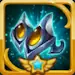
1番アーティファクト: 川の妖精の爪
効果: チームに魔法貫通 +19,224 とアーマー貫通 +19,224 を9秒間付与します。発動率: 100%。
強化優先度: 非常に高い - カスケードは貫通を好みます。エレメンタルサージにより、両方の防御ステータスへ圧をかけられるからです。

2番アーティファクト: 錬金術師のフォリオ
効果: アーマー貫通 +10,680 と物理攻撃 +3,561。
強化優先度: 高 - カスケードの式スケーリングと、適応型攻撃をより脅威にする貫通の両方を強化します。

3番アーティファクト: 素早さの指輪
効果: 素早さ +3,990。素早さはカスケードのメインステータスなので、物理攻撃 +11,970 とアーマー +3,990 を得ます。
強化優先度: 高 - 長期的なスケーリングは優秀ですが、武器と本のほうが通常はより即効性のある圧を与えます。
カスケードのグリフ強化優先度
ゲーム内の表示順は維持しつつ、投資は物理攻撃と貫通を先に進めます。これらがカスケードの最高の圧を解放するからです。
1番グリフ - 物理攻撃
レベル80ステータス: 物理攻撃 +8,340。
強化優先度: 非常に高い - カスケードの主要なダメージ式を直接引き上げます。
2番グリフ - アーマー
レベル80ステータス: アーマー +12,850。
強化優先度: 中 - 物理チームに対して良い防御になりますが、カスケードのダメージと貫通の需要より後です。
3番グリフ - HP
レベル80ステータス: HP +122,800。
強化優先度: 中〜高 - HPは序盤のバーストを耐え、ハイドロキネシスの保護タイミングまで到達しやすくします。
4番グリフ - アーマー貫通
レベル80ステータス: アーマー貫通 +12,850。
強化優先度: 非常に高い - 最高クラスのグリフです。エレメンタルサージにより、この値が魔法防御貫通にも反映されます。
5番グリフ - 素早さ
レベル80ステータス: 素早さ +2,110。素早さはカスケードのメインステータスなので、物理攻撃 +6,330 とアーマー +2,110 を得ます。
強化優先度: 高 - 素早さはカスケードにとって効率的ですが、攻撃面の最初の強化は通常、物理攻撃とアーマー貫通です。
カスケード対策 ヒーローウォーズ・アライアンス

コーブスは反復するダメージパターンを罰せるため、祭壇が有効な時はカスケードの時間経過ダメージと追加ヒットの圧がより危険になります。

エレクトラはカスケードの魔法ダメージを反射でき、彼のスキル運用の有効性を下げます。

アイザックのシールドは、カスケードの魔法ダメージと物理ダメージ、特にタイダルウェーブとフローズンメイルストロムに有効です。

ジュリアスのシールドは、カスケードの圧の一部を吸収し、カスケードが追撃を狙うタイミングで味方を守れます。
カスケードのシナジー ヒーローウォーズ・アライアンス

アミラはミステリーの圧、アイリスや高い魔法ダメージの敵への対策、そして追加のダメージ課題を敵に押し付けます。その間にカスケードはコントロールとソドンアーマーを広げます。

バーナは回復と追加エネルギーでこのミステリー構成を長く生存させ、カスケードがハイドロキネシス、タイダルウェーブ、リフルエンスを使う時間を増やします。

リアンはコントロールとテンポ妨害を持ち込み、カスケードの遅延ダメージと追撃ダメージが活きる余地を増やします。

サトリは同じミステリーコアに入り、敵がマークとコントロールに対応させられる間、カスケードの防御圧から恩恵を受けます。
カスケード攻略の結論
カスケードは、ダメージが柔軟でありながら、スケーリング自体は非常に直接的だと理解した時に最も強く使えます。物理攻撃とアーマー貫通は、彼のキットの大部分を強化します。潮汐のタリスマンは最高の攻撃的選択肢で、渦潮のタリスマンは強い物理圧を耐える必要がある時のより安全な選択肢です。
リアン、アミラ、バーナ、サトリを使うおすすめのミステリーチームでは、タリスマン2のカスケードが編成により高い安定性を与えます。まずウィンタースキン、ドーンスキン、ミシックスキン+、物理攻撃グリフ、アーマー貫通グリフ、川の妖精の爪を育て、その後にHP、アーマー、後半のレジェンダリーレリック生存強化で仕上げます。
おすすめガイドで新しいスキルをチェック！


意見を残そう！
カスケード攻略は役に立ちましたか？分かりにくかった点や、変更を提案したい点はありますか？アレクサンドレ・ゲームズのブログページのコメント欄にぜひ参加してください。意見、質問、提案を気軽に共有できます。
下のボタンをクリックして始めましょう: